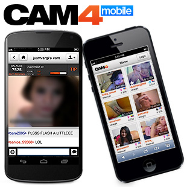

Как начать трансляцию на iphone?
Инструкция по работе с телефона для владельцев устройств на системе IOS
Для начала работы на сайте CAM4 с помощью Iphone/Ipad устройств обязательно убедитесь, что версия вашей системы
не ниже 11.0 версии
Откройте ваш браузер Safari на мобильном устройстве
Перейдите на сайт https://www.cam4.com/
Войдите в ваш аккаунт, используя данные в личном профиле
Нажмите на меню и выберите "Broadcast"
Нажмите "Разрешить" в появившимся окне
(для камеры и микрофона)
В новой версии для мобильных устройств, вы можете отложить принятие отправленной вам заявки на приватное шоу
Так же появилась возможность настройки приватного чата в мобильной версии
Когда трансляция начнется, вы увидите:
Количество полученных токенов и количество зрителей
Кнопка «остановить трансляцию»
Список сообщений чата
Вход в чат с пользователем
В случае, если сайт запросил обновить страницу, обновите её и в появившимся окне нажмите
"Разрешить использование камеры и микрофона"